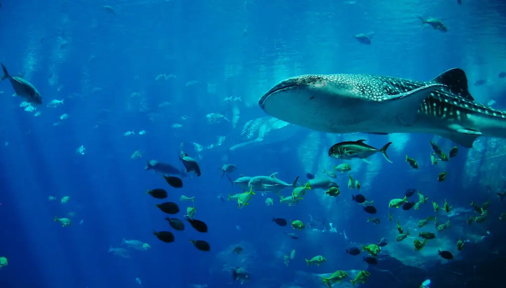
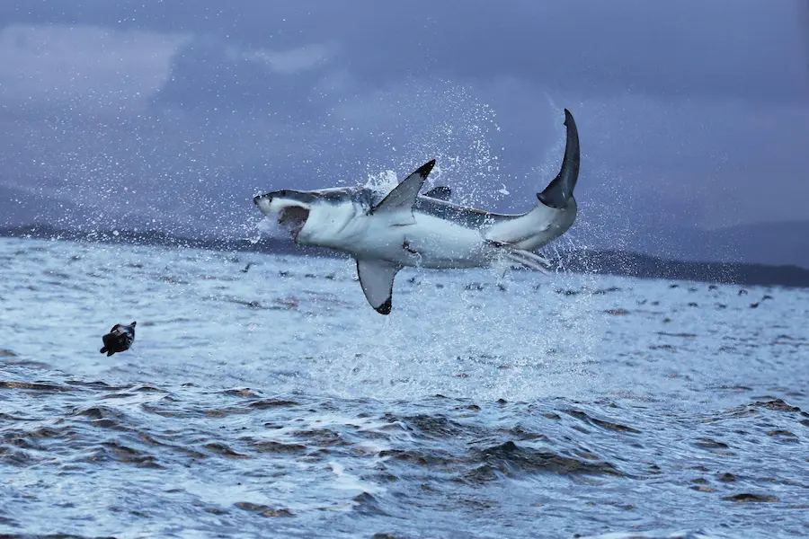
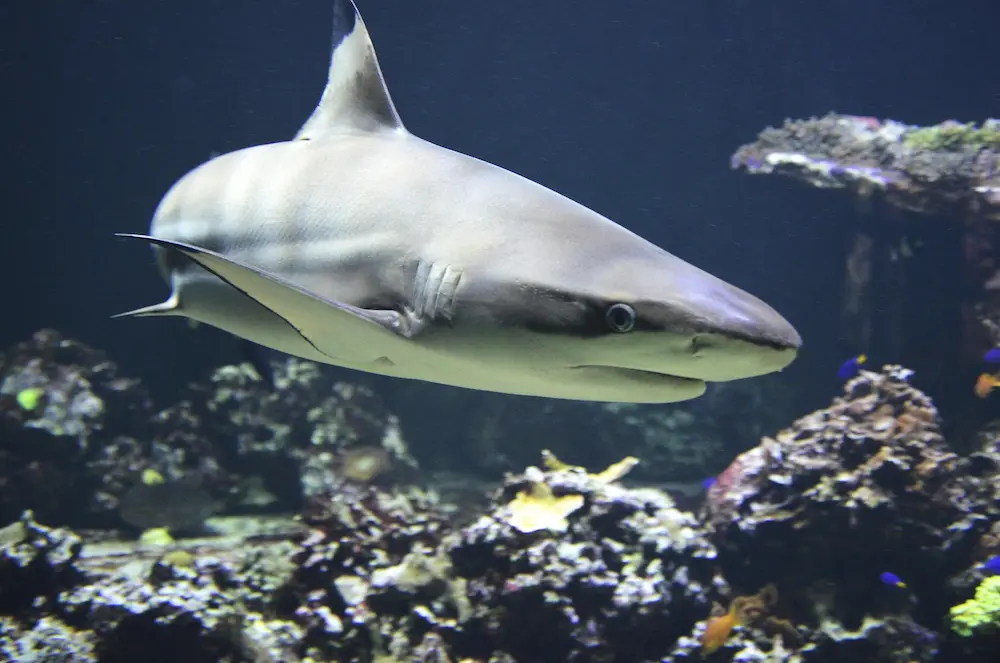

Whale Shark
"It has a broad, flat head, short snout,
and a huge transverse, terminal mouth almost as wide as a double bed.
The shark has prominent lateral ridges." They are easy to spot with tehir size and patter of
spots or stripes on their bodies. Adult male are around 26 feet but females are around 26 feet.
Fun Fact: Whale sharks are known as gentle giants because of how calm they are.

Great White
A Great White shark can weigh around 4,500 pounds.
As an adult it is around 21 feet long and can live up to 70 years.
It's top teeth are very broad and it's lower teeth are narrow.
Fun Fact: Due to it vunrability it is one of teh most protected sharks globaly.

Bigeye Thresher Shark
"Long curving, upper tail lobe nearly as long as the rest of the shark.
Huge eyes extend onto almost flat-topped head.Deep horizontal groove above gills.
Very long narrow pectoral fins, large pectoral fins." The Bigeye thresher is one of the three types of thresher.
Fun Fact: It uses it's tail to stun prey then eats it up.